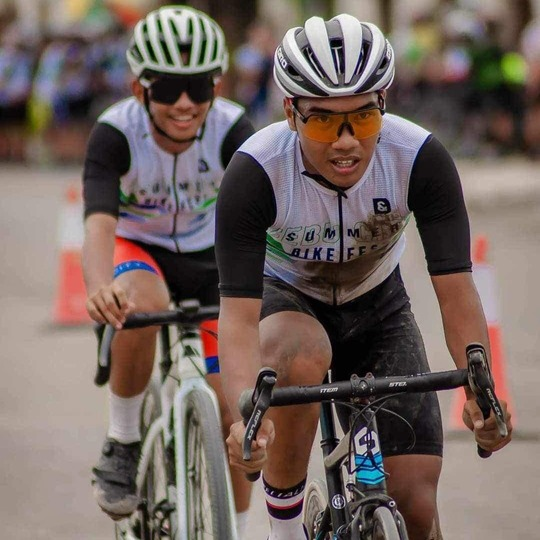
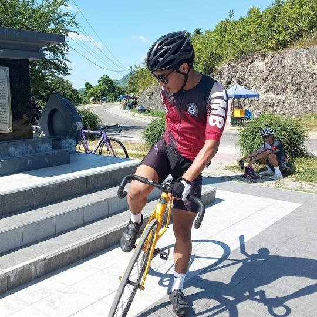
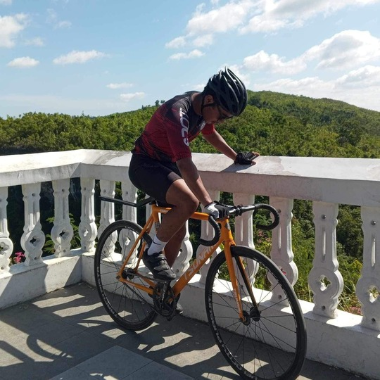
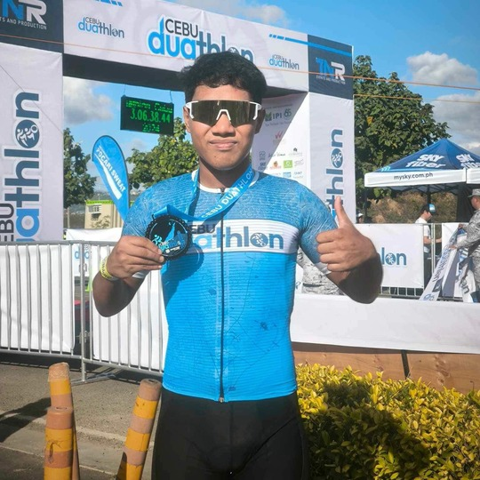

Hi! Cycling was such an amazing experience for me. I had a blast out on the roads and trails, feeling the rush of the wind and the thrill of the ride. It wasn’t just about the exercise; it was about the community. I met a lot of great people who shared my passion, and we had some unforgettable times together. Joining competitions was especially exciting it pushed me to challenge myself and grow as a cyclist. Beyond the races, there were countless rides with friends, scenic routes, and those moments of pure joy that made it all worthwhile. Cycling wasn’t just a hobby; it was a big part of my life and gave me so many wonderful memories.
This image really takes me back to my last competition. I was thrilled to finish in 2nd place, but it wasn’t without its challenges. On the last corner, I had an accident that left me with some pretty sore legs and arms. Despite the pain, I pushed through and managed to get back on my bike. Even though I finished 7th, I was proud of myself for not giving up. It was a tough race, but it taught me a lot about resilience and determination.
I used a fixed-gear bike to boost my leg strength and stamina, and it’s been a transformative experience. Not only did it challenge me in new ways, but it also significantly improved my balance. This was my very first fixie, and riding it has really enhanced my overall cycling skills and control.
At last, this was my very last competition: the Cebu Duathlon. It was an incredibly memorable and enriching experience. Even though I finished in 17th place, the joy I felt was immense. The support of my girlfriend, who cheered me on and was there for me every step of the way, made the race even more special. I am deeply grateful for the safe and exhilarating race I had, and for the unforgettable memories created.
